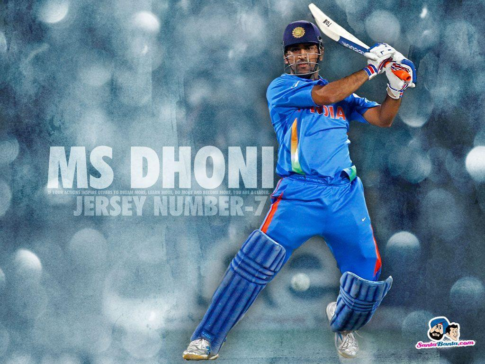
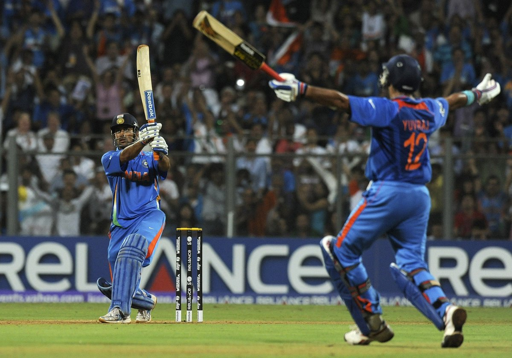

MAHENDRA SINGH DHONI : THE CAPTAIN COOL
By Aniket Mallik

Mahendra Singh Dhoni, perhaps the most inscrutable Indian sportsperson and a revered personality all over the world, finally hung up his boots from international cricket last year. And he did it in his own inimitable way, without any noise.
This element of his personality is what makes him special and unique – no noise, no fuss. Even when he jolted the entire nation by an impromptu decision to retire from tests, he did that without any noise. His characteristic demeanour of calmness has virtually defined his entire cricketing career. He has received brickbats and applause in equal measure – scathing criticism for his frequent crawling innings of late and attaining a virtual demigod status for winning almost every significant trophy under his belt – but what has never changed is his measured cognizance towards them.
MSD scaled up to the zenith of his career through his sheer astuteness and brilliant leadership. He arrived on the international stage when veterans like Sachin, Rahul, and Sourav were in the wane, and Indian Cricket was undergoing a transition phase MSD had to handle the reigns and maintain the equilibrium with respect to the seniors but leading them as well. Slowly but steadily he starting calling the shots from behind the wickets, and the captaincy mantle was soon rewarded to him because of his sharp reading of the game and his penchant for intuitive cricket.
Win or lose, MS never showed anything on the field. He had this unique quality of absorbing pressure but detaching himself from the end result. His on-field persona was always the same – Zen. Like a monk, he clobbered bowlers during death overs to gift India incredible victories, and his lightning-fast stumping and run out was just another icing on the cake. His emphasis on process rather than result bought him laurels, and of course, millions of fans across the globe.

What MS taught us was to believe in one’s own abilities, to dream, and soar high based on pure hard work. When he arrived on the crease, people had hope, that some miracle is going to happen, and he did create miracles umpteen number of times. Who can forget that one-handed run out against Bangladesh and sealing the victory for India from the jaws of defeat? In the 2019 semi-final world cup match against New Zealand, wickets were tumbling on the other side but he was still there in the crease and our glimmer of hope. His unfortunate run out dashed all our hopes and his dreary walk back to the pavilion was a pain to watch.
Such was the impact MSD had on us and it will remain. For what he has achieved for the nation and himself, it's sheer magic. Thank you MS Dhoni for all the memories you have gifted us. You played till the end but recused yourself from the champion's celebration, allowing the team to celebrate. You took the heat and absorbed so much of pressure. And most importantly, you identified yourself with us, as you taught us to dare, to dream!!!!